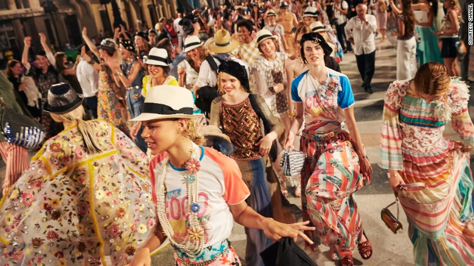

Location, location, location: The most exotic fashion shows ever staged
To the uninitiated the fashion season system can be confusing. Though moves are being made by some brands to break with tradition, on the whole major collections are still shown six months before they appear in store -- for example, in September press will view the Spring-Summer 2017 collections, available to consumers early next year.
With customers located globally some even question the use of monikers like Spring-Summer and Autumn-Winter.
What is cruise?
Cruise, or Resort, is an inter-season or pre-season collection of ready-to-wear, with its counterpart being the more literally named pre-fall. It is shown from May to July and is a pre-cursor to the Spring-Summer collection in September. Pre-fall is shown from November and again heads off the Autumn-Winter ready-to-wear collections in February. Read: Fashion's most elaborate catwalks Dating back to the 1960s, the Cruise collection was historically aimed at wealthier customers, those who could jet off during the winter months. Today the timing still stands, with Cruise landing in stores around November and pre-fall in May. The collections became, and still are, a key focus for buyers, providing fresh new stock in the months between the traditional seasonal collections and designed with a generally more commercial aesthetic. They can prove very lucrative, partly due to the longer time the stock spends on the shop floor.
A traveling trend
While the importance of these collections is well documented, it is the rise in spectacle that has become a new staple of the seasons.This idea of travel and holidays remains characteristic of the collections today, and has led to a trend unique to the biggest and most valuable fashion houses of using location as a way of outdoing each other, each season choosing increasingly stylish or remote destinations. The system du jour is to invite around 600 of your closest international press, celebrities and VIP clients to a far-flung location, treating them to a long weekend of outings and events, culminating in a show staged somewhere ideally inaccessible to the public. It is the ultimate in luxury mini breaks.Karl is King
Chanel is thought to have kicked off this trend, and is arguably still the master. Over the years they have shown pre-collections in Salzburg, Edinburgh, Dallas, Shanghai... the list goes on. It follows then that Karl Lagerfeld, the brand's creative director, renowned for his love of spectacle, has been a key player in this area. When Karl took Chanel to Cuba last month, the first time the brand hit South America for Cruise, it was arguably counting on rising media interest in the newly opened market. High fashion in Old Havana was certainly some sort of statement.